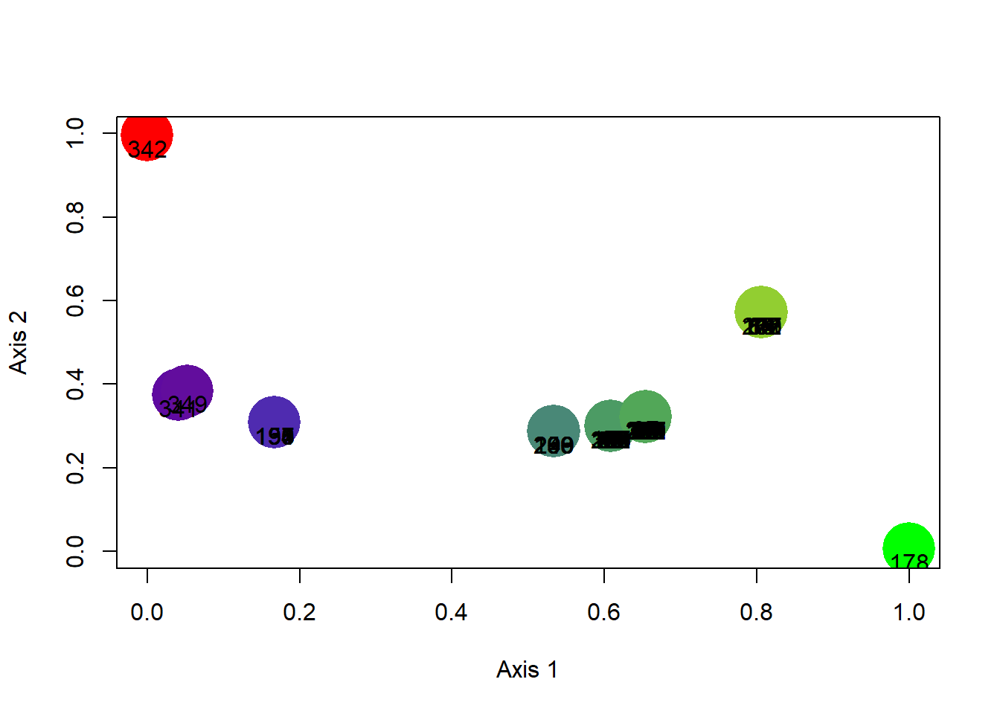

Para a atividade 4, partiremos dos primeiros passos da atividade 1,
mas com algumas modificações na escala do mapa (global desta vez). Para
tal, bastar realizar estes primeiros passos rodando este
chunck de código abaixo.
library(letsR)
library(tidyverse)
library(rgdal)
# Importanto o shapefile
borb <- rgdal::readOGR(dsn = "data/Chaetodontidae_NewWorld.shp")## OGR data source with driver: ESRI Shapefile
## Source: "/Users/cesarcordeiro/git/macroecologia-UENF_2022/data/Chaetodontidae_NewWorld.shp", layer: "Chaetodontidae_NewWorld"
## with 29 features
## It has 27 fields
## Integer64 fields read as strings: id_no# Criando raster
borb_maps <- lets.presab(borb, resol = 3,
cover = 0.01)
# Criando matrix de presença e ausência
borb_pa <- borb_maps$Presence_and_Absence_Matrix#carregando pacotes usados
library(maptools)
library(maps)
library(rgdal)
library(vegan)#criar uma tabela com dados de presenca/ausencia das especies
pa <-as.data.frame(borb_maps$Presence_and_Absence_Matrix[,-c(1:2)])
#checar os nomes para ver se contem somente as especies
names(pa)## [1] "Amphichaetodon melbae" "Chaetodon auriga"
## [3] "Chaetodon capistratus" "Chaetodon flavirostris"
## [5] "Chaetodon hoefleri" "Chaetodon humeralis"
## [7] "Chaetodon litus" "Chaetodon lunula"
## [9] "Chaetodon mertensii" "Chaetodon meyeri"
## [11] "Chaetodon ocellatus" "Chaetodon pelewensis"
## [13] "Chaetodon robustus" "Chaetodon sanctaehelenae"
## [15] "Chaetodon sedentarius" "Chaetodon striatus"
## [17] "Chaetodon unimaculatus" "Forcipiger flavissimus"
## [19] "Hemitaurichthys multispinosus" "Johnrandallia nigrirostris"
## [21] "Prognathodes aculeatus" "Prognathodes aya"
## [23] "Prognathodes brasiliensis" "Prognathodes carlhubbsi"
## [25] "Prognathodes dichrous" "Prognathodes falcifer"
## [27] "Prognathodes guyanensis" "Prognathodes marcellae"
## [29] "Prognathodes obliquus"# Calculando dissimilaridade na composição de espécies
library(betapart)
beta.sim <- betapart::beta.pair(pa,index.family="sorensen")$beta.sim###Visualizando a composição de especies por meio de um NMDS
library(vegan)
points <- vegan::metaMDS(beta.sim, k=2, autotransform=F, trymax=5)$points## Run 0 stress 0.000621963
## Run 1 stress 0.0003799572
## ... New best solution
## ... Procrustes: rmse 0.04672703 max resid 0.1716446
## Run 2 stress 0.0005227159
## ... Procrustes: rmse 0.04425947 max resid 0.1838224
## Run 3 stress 0.0004978659
## ... Procrustes: rmse 0.03864805 max resid 0.2807707
## Run 4 stress 0.0006408195
## ... Procrustes: rmse 0.05039006 max resid 0.4413699
## Run 5 stress 0.0004080444
## ... Procrustes: rmse 0.05120458 max resid 0.4908674
## *** No convergence -- monoMDS stopping criteria:
## 5: scale factor of the gradient < sfgrmin#Atribuindo cores de acordo com a composicao de especies (escala RedGreenBlue)
library(recluster)
cores <- recluster::recluster.col(points)
RGB <- data.frame(sites=rownames(cores),RGB=rgb(cores[,3:5],maxColorValue=255))
recluster::recluster.plot.col(cores,cex=5,cext=1)
library(maps)
#criando um novo objeto contendo o mapa da composicao
mapa_comp <- borb_maps$Richness_Raster
#Atribuindo ao mapa as cores RGB
mapa_comp[mapa_comp[]==0]<-NA
mapa_comp[mapa_comp[]!=0]<-RGB$RGB
maps::map("world")
plot(mapa_comp,add=TRUE,axis=FALSE)